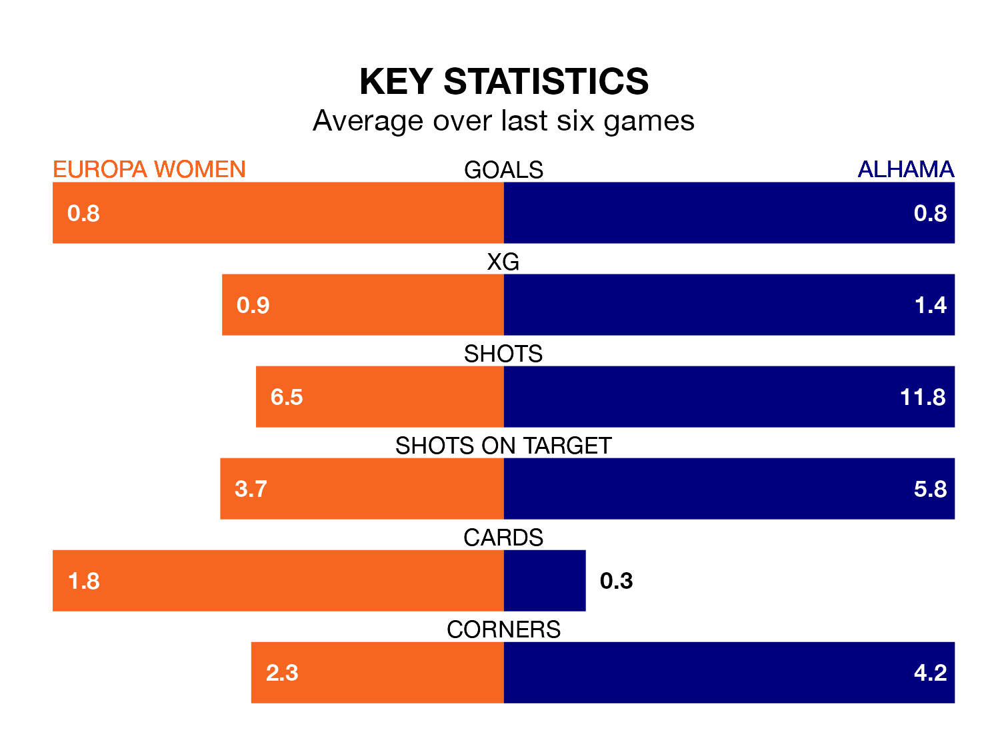

Europa Women welcome Alhama on early Sunday looking to pick up points to end their four-game losing streak.
Europa's struggles have left them with just three points from their last six Primera Federación Femenina matches, while their opponents have earned eight from a possible 18.
With 13 goals in 15 games so far this season, Europa are the league's third-lowest scorers with 0.9 goals per game. And they are conceding more than average, letting in 34 goals at a rate of 2.3 per game.
Alhama, meanwhile, are above average scorers, with 1.6 goals per game, compared to a league average of 1.2. They have conceded 1.0 goal per game.
The hosts are 12th in the table after 15 games, of which they have won four and drawn one, earning 13 points.
The away side are seven places ahead of Europa in fifth, with eight wins and three draws putting them on 27 points.
Europa's last match was on Sunday, a 2-0 loss against Barcelona II Women.
Alhama lost 1-0 against Osasuna Women last time out, also on Sunday.
Updated: 09:07 (UTC), 24/01/24